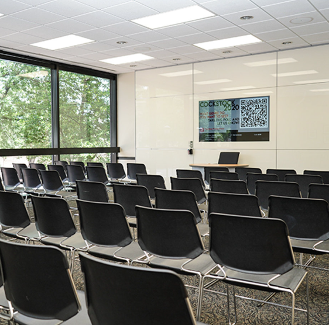

Resources
Are you wanting to have the best four years ever and don’t know where to start? Here you can find information on planning events, finding the right club for you, and more!
Need a venue for your event?
USC offers a variety of spaces that students can reserve for hosting events! Just in and around Russell House alone, students can reserve rooms such as a large ballroom, conference rooms, game rooms, a theater, a chapel, and even outdoor spaces! To learn more about reservations in Russell House, click Here!

Not sure how to promote your event?
One way to promote your event is to click Here and fill out the form so your event can be on the event calendar here!
You can also make a flyer on Canva and post about your event on your socials! The South Carolina Snapchat story is a great place to start as it will already allow several thousand people to learn about your event. Also, posting it to your insta story or making a TikTok video about you preparing the event will get people excited! If you want to throw some physical copies out into the world, printing flyers and hanging them in Russell House, around your apartment complex, and in buildings where you have classes are a great idea too!
Want to find the right club for you?
There are so many organizations, social groups, and events going on at USC so finding the right place to start can be overwhelming. First, consider your hobbies, career goals, and social setting size preferences. Think about whether you want to join an academic organization, a sports club, or just a socializing group! It can be helpful to attend meet and greets and talk with current members to get a vibe of the group! You can visit the UofSC Leadership and Service Center as well to learn about different organizations and finding the perfect community for you!